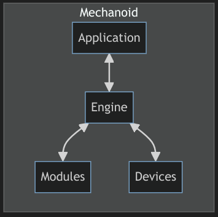

"The Smallest Thing That Could Possibly Work: WebAssembly on Microcontrollers"
WASM I/O 2024
Ron Evans - @deadprogram
Ron Evans (@deadprogram)
Technologist For Hire
hybridgroup.com
Software that makes
your hardware work
Open Source Projects
tinygo.org
WASM I/O
WebAssembly on Microcontrollers
Why?
Hardware devices that are extensible
App stores for devices
Hardware with software add-ons
User programmable machines
Application specific APIs for hardware
Games
Industrial Control Systems
Devices that need updates
Bricking the device is less likely
WASM code is compact
Better over slow/high latency connections
Device code that is portable
Use any language that can compile to WASM
C
Rust
Zig
Go
Actually doing this has been incredibly difficult
Until now...
Introducing Mechanoid
Framework for WebAssembly applications on embedded devices
Written using Go/TinyGo
Write modules using any language that compiles to WASM
Batteries included
Built on open source
TinyGo
tinygo.org
Wazero
wazero.io
wypes
github.com/orsinium-labs/wypes
Embedded systems
Microcontrollers
32-bit processors
Single core
Less than 256k RAM
TinyGo runs bare metal on hardware
No operating system
